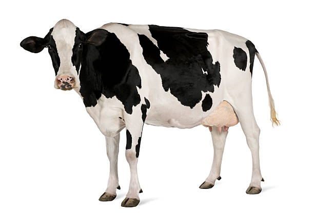

Productos para Caballos
Aquí encontrarás información sobre productos para caballos, tales como alimentación, cuidados, y accesorios.

Productos para Vacas
Descubre una variedad de productos para vacas, desde suplementos alimenticios hasta equipos de manejo.

Productos para Ovejas
Elige entre una amplia gama de productos para ovejas; desde alimentos llenos en proteinas, hasta su alimentación nutritiva.